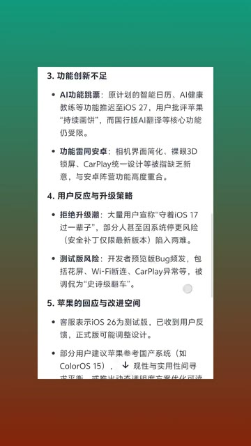
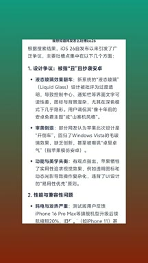
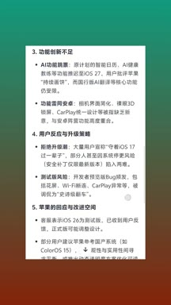
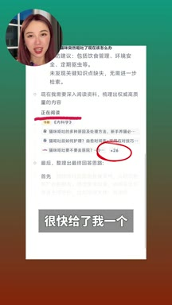
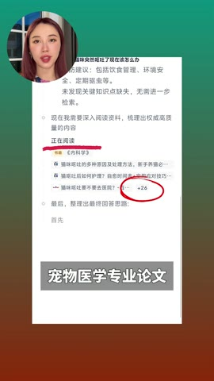

01钩子 / 问题
先用荒诞问题暴露普通 AI 的迎合
视频连续提问 IS26 的网络吐槽和‘高考满分 750 如何考上 985’等问题，借模型老实回答的反差引出夸克深度搜索。
好的 AI 搜索不应只抓关键词，而要先规划问题、寻找权威来源，再给出适合不同用户的方案。
这条视频的功能证明其实很完整：荒诞问题、HTML 转 PPT、宠物健康和图片去人群四种任务都出现了；但 85 秒里价值点分散，而且标题把‘AI 搜索瞎编’和品牌解决方案捆在一起，商业属性可能降低初始信任。
好的 AI 搜索不应只抓关键词，而要先规划问题、寻找权威来源，再给出适合不同用户的方案。
不是复述内容，而是标出每一段承担的叙事任务、观众问题和画面证据。
视频连续提问 IS26 的网络吐槽和‘高考满分 750 如何考上 985’等问题，借模型老实回答的反差引出夸克深度搜索。
作者强调产品不会机械抓关键词，而会像专家一样先拆解问题、规划搜索方向，再寻找资料。
她询问如何把 HTML 格式 PPT 转为可编辑 PPT。系统先规划，再从权威渠道搜索，最终同时给出简单工具和复杂代码方案。
作者认为垃圾信息会污染搜索结果，于是用猫咪呕吐问题测试。产品阅读多篇宠物专业论文后给出建议，以来源权威作为主要卖点。
最后上传图片并要求删除背景人群，展示一句话完成图片修改；结尾把智商、搜索能力和免费整合成产品结论。
下列章节覆盖视频的主要论点、步骤与结果；每段都保留时间码和关键画面。

视频连续提问 IS26 的网络吐槽和‘高考满分 750 如何考上 985’等问题，借模型老实回答的反差引出夸克深度搜索。
作者强调产品不会机械抓关键词，而会像专家一样先拆解问题、规划搜索方向，再寻找资料。
她询问如何把 HTML 格式 PPT 转为可编辑 PPT。系统先规划，再从权威渠道搜索，最终同时给出简单工具和复杂代码方案。
作者认为垃圾信息会污染搜索结果，于是用猫咪呕吐问题测试。产品阅读多篇宠物专业论文后给出建议，以来源权威作为主要卖点。
最后上传图片并要求删除背景人群，展示一句话完成图片修改；结尾把智商、搜索能力和免费整合成产品结论。
短视频每 1 秒、常规视频每 2 秒、超长视频每 3 秒取一帧。



小红书官方 zh-CN 字幕 · 20 段 · 536 字。字幕只记录声音；工具名、界面文字和结果含义必须结合上方视觉知识地图复核。
我想知道网友怎么吐槽is二十六
再问一个经典的弱智问题，高考满分只有七百五，要怎么考上九八五
他也老实巴交的给我回答了，这就是夸克最新的深度搜索功能
它和大部分ai搜索的工具都不同，不是机械的抓一堆关键词瞎搜
也不会找一堆不靠谱的信息来应付你，而是会像人类专家一样先思考
再搜索这期视频呢，我就教大家正确的使用夸克的深度搜索，我们来到夸克
在这里选择深度搜索，然后就可以开始提问了
刚才提了俩弱智问题，现在换一个正常点儿的，比如这两天有朋友问我
如何把html格式的ppt转为ppt格式，以方便编辑
就把这个问题发给他吧，你看他会像agent一样先规划几个搜索方向
然后开始去找各种权威的渠道搜索信息，这是他最终给我的结果
既给我推荐了简单的工具，也写了适合开发者的复杂代码，非常靠谱
还有一个我个人很在意的能力，就是信息的权威性
因为垃圾信息会破坏所有的搜索结果，而夸克对这方面把控得非常严格
比如我问他猫咪突然呕吐了该怎么办？

他一口气读了二十多篇宠物的专业论文，很快给了我一个让我松一口气的结果，对了
如果你有图片编辑的需求，你也可以认给他
比如这张图，我希望删掉背景里的人群，就这么简单的一句话，图片就p好了
说真的，这才是真正意义上的ai搜索天花板
它不仅有智商，更有搜赏，而且还免费，朋友们快去用吧
该内容带有明确品牌测评/推广语气。公开页面无法确认合作、投流或搜索结果准确率；医疗和宠物健康建议仍需专业人士验证。
打开小红书原帖 ↗